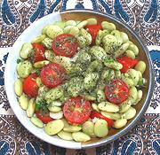

|
Lima Bean SaladLebanon - Salata Fasoulia | ||||
| Serves: Effort: Sched: DoAhead: |
5 salad ** 35 min Yes |
This is a very nice salad or meze (appetizer), and fairly substantial, since it's mostly lima beans. It can be made well ahead and benefits from some rest time to blend flavors. | |||
|
|
14 ar 2 7 ----- 2 1/2 3 3 ----- ar |
oz oz oz --- cl t T T --- |
Lima Beans frozen (1) Salted Water Scallions Cherry Tomatoes (2) -- Dressing Garlic Salt Lemon Juice Olive Oil ExtV -- Garnish Mint, dried |
Make - (35 min + chill)
|